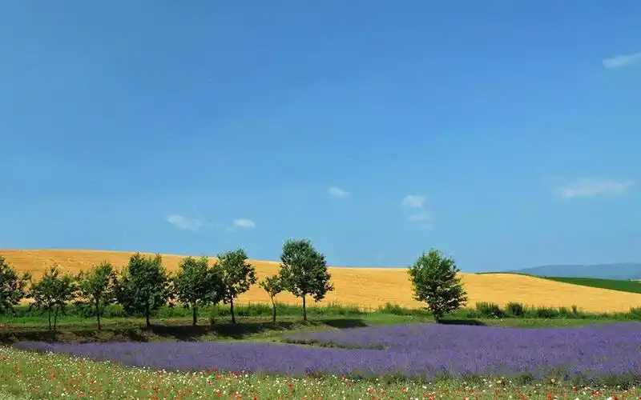

共读时光·心语交织——让绘本架起亲子心灵之桥”
“每一本书都是一扇窗，推开它，孩子的世界便多一片星光；每一次共读都是一座桥，走过它，父母与孩子的心便更近一寸。那么我们如何开启与孩子的阅读之旅呢？
运动，为孩子的智慧成长 “添柴加薪”
许多家长更注意孩子的学习表现，不惜投入大量时间精力金钱，供孩子买书、买玩具教具、上各种兴趣班和培训课，就为了看到一份优秀的成绩单。然而孩童的成长发育是非常复杂多面的，身体发育、心理健康和智力发展同样重要，良好的身心状态也会反哺智力发展。反之如果身心得不到健康发展，即使智商堪比天才，也可能被身体和心理状况拖累，空有才智而无力发挥。

AI+课堂 | 教育部部署加强中小学人工智能教育
近日，教育部办公厅印发通知，探索中小学人工智能教育实施途径，加强中小学人工智能教育。
“童”行节约，不负“食”光 | 幼儿园世界粮食日主题教育
中国与东盟林业资源丰富，随着绿色“一带一路”推进，林业已成为重要合作内容。论坛旨在加强科研协作，推动林业高质量发展与国际合作。
“童”行节约，不负“食”光 | 幼儿园世界粮食日主题教育
关于“五谷，古代有多种不同说法，其中最主要的说法有两种:一种指稻、黍、稷、麦、菽;另一种指麻、黍、稷、麦、菽。两者的区别是:前者有稻无麻，后者有麻无稻。古代经济文化中心在黄河流域，稻的主要产地在南方，而北方种稻有限，所以“五谷”中最初无智。
XXXXXXXXXXXXXXXX
XXXXXXXXXXXXXXXXXXXXXXXXXXXXXXXXXXXXXXXX
XXXXXXXXXXXXXXXX
XXXXXXXXXXXXXXXXXXXXXXXXXXXXXXXXXXXXXXXX
XXXXXXXXXXXXXXXX
XXXXXXXXXXXXXXXXXXXXXXXXXXXXXXXXXXXXXXXX